代码与编译
代码
class Calculator {
public:
int value;
Calculator(int v) : value(v) {}
int multiply(int n) { return value * n; }
int addAndMultiply(int a, int b) {
return multiply(a + b);
}
};
class ScientificCalculator : public Calculator {
public:
ScientificCalculator(int v) : Calculator(v) {}
virtual int power(int exp) {
int result = 1;
for (int i = 0; i < exp; i++) {
result *= value;
}
return result;
}
virtual int process(int x, int y) {
return power(x) + multiply(y);
}
};
int main() {
ScientificCalculator* calc = new ScientificCalculator(2);
int result = calc->process(3, 4);
delete calc;
return result;
}编译
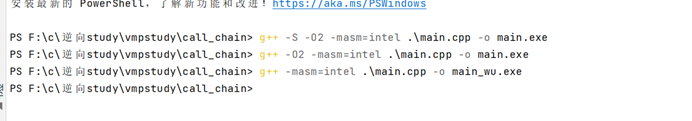
一些基础
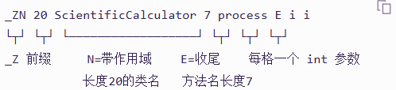
这个用到了虚函数，简单说一下，后面详细说。
普通调用 vs 虚函数调用
先说普通调用，假设函数 int foo(int a)，编译器会放到一个固定地址，调用的时候汇编是
call 0x1400003180然而虚函数调用是虚拟地址，在对象里面去查表，基本就是
mov rax, [对象]
mov rax, [rax]
call rax主要是为了多态的情况。
为什么逆向时要新建 struct
关键认知：虚表不是代码，是一块只读数据（在 .rdata 里），里面连续摆放着函数指针：
地址 内存内容 含义
0x140005580 ┌───────────────────────────┐
│ 0x1400031C0 │ ← 槽0: power 函数的地址
0x140005588 │ 0x140003210 │ ← 槽1: process 函数的地址
└───────────────────────────┘如果不创建的话：不建结构体，IDA 不知道 vptr 指向的是什么，反编译就只能输出 (**&this->value) 这种垃圾。
建结构体 ScientificCalculator_vtbl：IDA 就知道了——"vptr 指向的是一块数据：第 0 个字段是函数指针 slot_power，第 8 个字段是 slot_process"。
注意这个只是为了让源代码更加可读。
vptr（虚表指针）
接下来我们说一下 vptr（虚表指针）。
对象 / 虚表 / vptr 关系
对象 (new出来的内存)
├─ [0x00] vptr ──→ 虚表 (静态数据, .rdata里的表)
│ ├─ [0x00] 槽0: 第1个虚函数地址
│ └─ [0x08] 槽1: 第2个虚函数地址
└─ [0x08] 普通成员对象：程序运行时才分配（本例 new(16)），每个实例一份。
虚表：编译时就写死在 .rdata 里的地址表，全程序只有一份，所有同类的对象共享。
vptr：对象和虚表之间的"桥"，每个实例自己一份（因为它可能属于不同类）。
vptr 存放位置
只要有虚函数的类，编译器强制：对象第 0 个成员必须是 vptr（8 字节）。
+0x00 qword vptr = 0x140005580 ← 指到虚表槽0位置
+0x08 dword value = 2 ← 你的业务成员this 指针永远指向对象开头，所以反汇编里 [this] 就经常是 vptr。
vptr 赋值时机
vptr 不是你 C++ 源码里写的任何语句——它是编译器在你每个构造函数开头自动插入的指令。
0x140003281 lea rdx, power ; 取虚表地址 0x140005580（编译器认得这张表）
0x140003288 mov rax, [rbp+arg_0] ; this
0x14000328c mov [rax], rdx ; 对象[0] = 虚表地址 ← 就是 vptr 的赋值如何确认一个类有没有 vptr
mov [this], X ; X 指向 .rdata 里的函数指针表 → 有 vptr，多态类
mov [this], a2 ; 直接把参数写进对象[0] → 普通类，无虚函数逆向
main
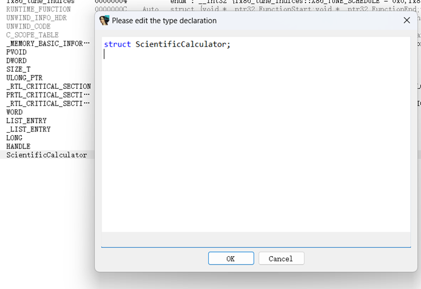
能确定是 C++。
int __fastcall main(int argc, const char **argv, const char **envp)
{
ScientificCalculator *v3; // rbx
int v5; // [rsp+2Ch] [rbp-Ch]
_main(argc, argv, envp);
v3 = operator new(0x10ui64);
*(v3 + 2) = 2;
*v3 = &off_140005580;
v5 = ScientificCalculator::process(v3, 3, 4);
operator delete(v3, 0x10ui64);
return v5;
}判断后应该是这样，理由如下：calculator（方便理解就叫这个名字，其实就是创建的对象），result 就是结果，return 不是标准的返回 0 而已（有可能计算出来就是 0）。
int __fastcall main(int argc, const char **argv, const char **envp)
{
ScientificCalculator *calculator; // rbx
int result; // [rsp+2Ch] [rbp-Ch]
_main(argc, argv, envp);
calculator = operator new(0x10ui64);
*(calculator + 2) = 2; // ScientificCalculator 某个值=2，无默认值
*calculator = &off_140005580;
result = ScientificCalculator::process(calculator, 3, 4);
operator delete(calculator, 0x10ui64); // 删除对象
return result; // 返回process计算结果
}
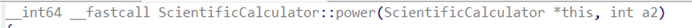
a2 应该是结构体里面的东西，是一个 int。看下面的，这个只是优化之后的。
main_wu（优化后）
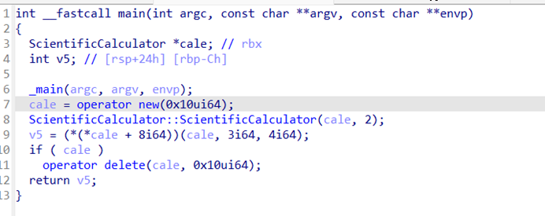
进行跟进找 vptr。
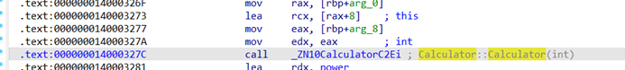
找到 this。
指向 0x000000140005580，在后面就是直接去对象，那么对象[0] 写入的地方就是 0x000000140005580，也就是 vptr。
那么就有了
0x00 vptr → 0x000000140005580（x64的指针是8字节）
0x08 int calve = 2去 ScientificCalculator 0x0000000140005570。
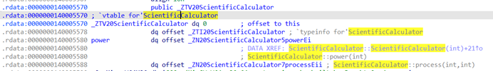
Itanium ABI 虚表布局
这是 Itanium ABI 虚表标准布局，这个是 gcc 编译的，后面再做 msvc。
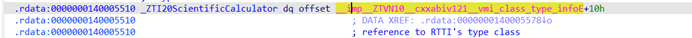
0 是 offset-to-top（多重继承时是偏移，这里单继承 = 0）。第二个指向 RTTI。
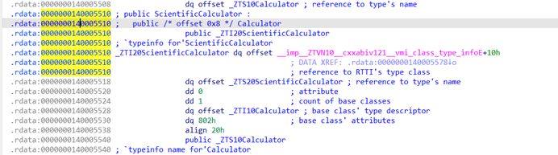
再看 0x0000000140005510 就是 RTTI。
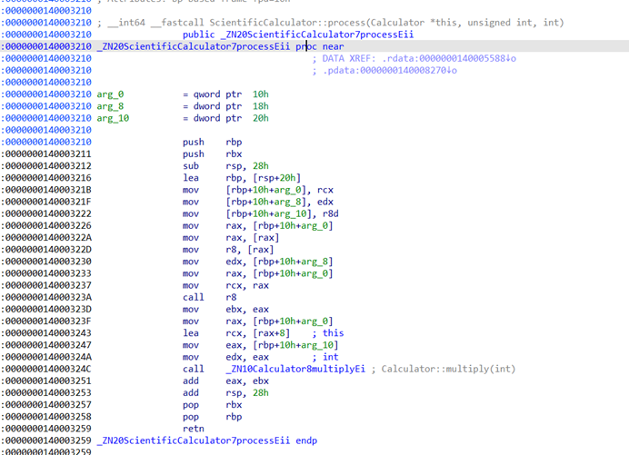
第 1 个 qword → libstdc++ 的 __class_type_info 虚表（extern，不用管）。
第 2 个 qword → 0x140005550 = _ZTS20ScientificCalculator 字符串，内容是 "20ScientificCalculator"（长度前缀 + 类名）。
调用流程整理
整理下，main 先调用 process。
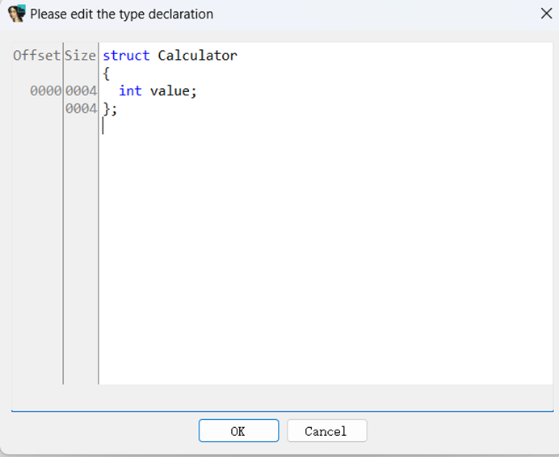
main → vtable[1] process(3,4) → vtable[0] power(3) ─┐
└ multiply(4) ─┴→ 相加结构体定义
接下来想计算的就计算，我们吧逆向弄完，缺少结构体。
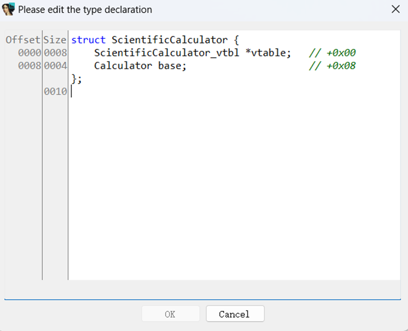
struct Calculator {
int value;
};struct ScientificCalculator_vtbl {
__int64 (__fastcall *slot_power)(void *self, int exp);
__int64 (__fastcall *slot_process)(void *self, int a, int b);
};解释一下 SC_METHOD，是个宏，用于成员函数（systemc.h）。
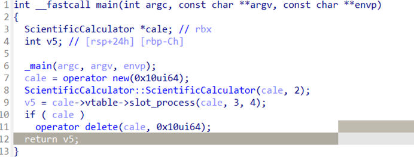
struct ScientificCalculator {
ScientificCalculator_vtbl *vtable; // +0x00
Calculator base; // +0x08
};